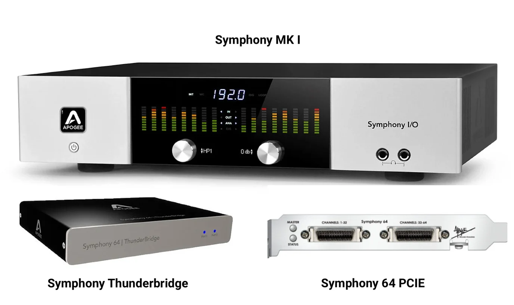
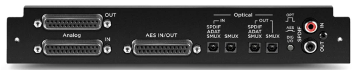
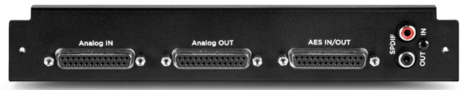
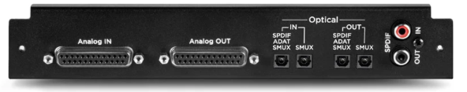
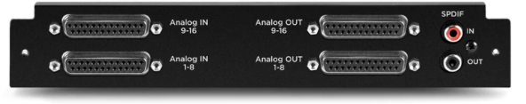
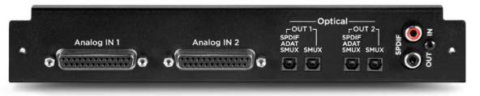
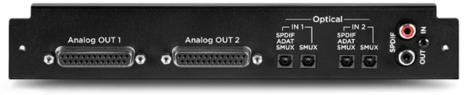
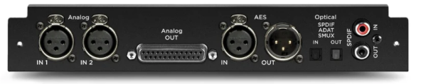
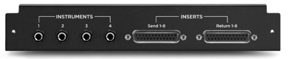

Modern software for classic Apogee hardware
Free, open-source USB and ThunderBridge drivers and a native macOS app for the original Apogee Symphony I/O MK I. Optimized for modern Apple Silicon Macs. Open to the community to maintain and extend.
Everything you need to keep recording
A native control app, modern connection drivers, and the everyday controls you expect.
Input and output controls, hardware metering, routing and monitoring.
16-channel recording and playback, plus optional Mac keyboard volume control.
Modern DriverKit support and low-latency mixing for compatible hardware.
Clock source, sample rate, optical format, trims and presets.
See the project documentation for current limitations and setup details.
Supported hardware

About the hardware: Apogee documentation · Sound On Sound review
Supported I/O modules for Symphony I/O (original)
Controls are provided for these eight original-generation modules. Hardware coverage varies; see the repository’s tested configurations. MkII modules are not compatible.








8MicPre must be installed in the second slot, with a compatible original 8x8, 16x16 Analog In/Out, or 16 Analog In / 16 Digital Out module in the primary slot. Apogee compatibility details ↗
Yours to build on
The MIT-licensed repository contains the independently developed unofficial Maestro desktop app and USB and ThunderBridge driver code, with instructions to build and extend it.
Explore the source ↗No original Apogee firmware or proprietary software is included. Apple signing keys are excluded; building and distributing the complete driver package requires your own Apple Developer certificates and approved entitlements. We recommend the signed, notarized installer. See the advanced build instructions.
This project is independently maintained. Contributions and improvements are welcome.
Thank you, Apogee.
Apogee builds exceptional hardware. The proof? More than sixteen years later, the original Symphony I/O still works beautifully and sounds incredible. Thank you for supporting this independent effort and giving the community the opportunity to keep this hardware alive. We hope more manufacturers follow your example when official support comes to an end.
Dirk and the team at Apogee have been incredibly generous in helping make this project possible.
Questions, bugs & feedback
This is an independent, community-maintained project and not an official Apogee product. Apogee has been incredibly generous in helping make this project possible. We want to respect that generosity and ensure their team isn’t burdened with support requests for an independent project. Please help us keep this a positive experience for everyone by directing all questions, bugs, and feature requests to the community channels below.
Share setup questions, tips, and experiences with other Symphony I/O owners.
Discuss on Gearspace ↗Report issues, suggest improvements, and follow development in the project repository.
Open GitHub Issues ↗Please don’t contact Apogee for support with this unofficial software; their team does not maintain it.